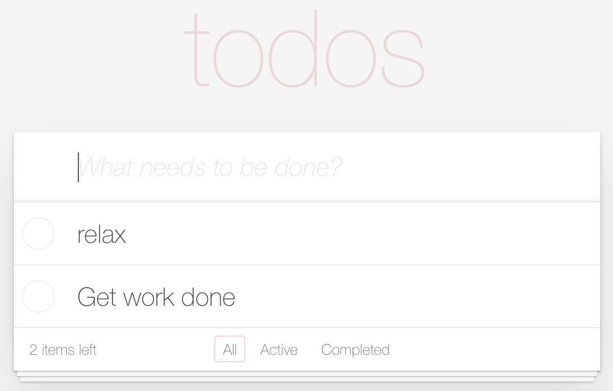

Sensible patterns and practices 😇¶
Write Atomic tests ⚛️
Using API or DB for data setup/teardown
Run tests in parallel from the start 🃠ğŸƒ
Arrange act assert 💪
Page object pattern 📃
Fluent pattern 🏃
Screenplay pattern 🎥
Builder pattern for API or data objects 🏗
Factory pattern ğŸ
Atomic tests âš›ï¸Â¶
Write targeted tests
Ideally, Max 2 assertions per test
Use API/Inject JS/Cookies/Modify DB to set application state
💡: Follow TRIMS
Arrange act assert¶
Setup data/state
Perform a test
Assert on the state
Cleanup
Some prefer Given/When/Then to the above convention, both are same in spirit
Parallel tests¶
Atomic tests work great in parallel
Do NOT use static keyword/shared state
Outcome of one test should not cause another to fail
Don’t chain tests
Page object¶
Write page objects for components within pages
Should be well named, and specify intent
Properties and behaviors encapsulated as methods
Don’t have webdriver API calls in page objects, instead inherit/compose from a base page
Fluent pattern ğŸƒÂ¶

@Test(groups = Tags.REGRESSION)
public void testToDoItemsLeft() {
HomePage home = new HomePage(driver);
home.addTodo("Get work done");
home.addTodo("relax");
...
}
More readable with fluent¶
💡return either the current page object or the next page object to enable fluent methods
@Test(groups = Tags.REGRESSION)
public void testToDoItemsLeft() {
// More readable 😄
HomePage home = new HomePage(driver)
.addTodo("Get work done")
.addTodo("relax");
...
}